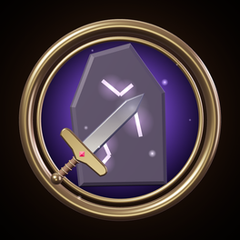

Keine Verbindung
Seelenstein braucht beim Start eine Internetverbindung. Prüfe WLAN oder mobile Daten und versuche es erneut.
No connection. Seelenstein needs the internet to start. Check Wi-Fi or mobile data and try again.

Seelenstein braucht beim Start eine Internetverbindung. Prüfe WLAN oder mobile Daten und versuche es erneut.
No connection. Seelenstein needs the internet to start. Check Wi-Fi or mobile data and try again.